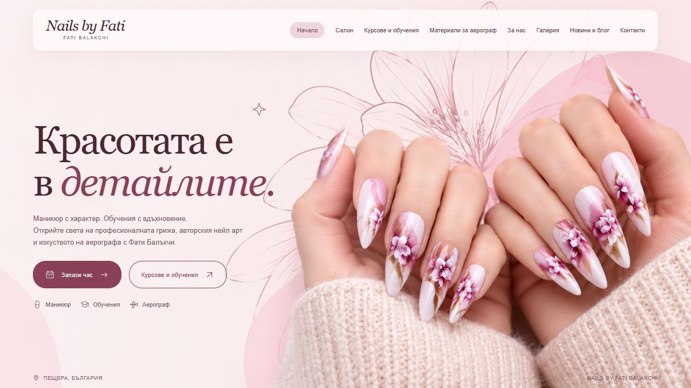
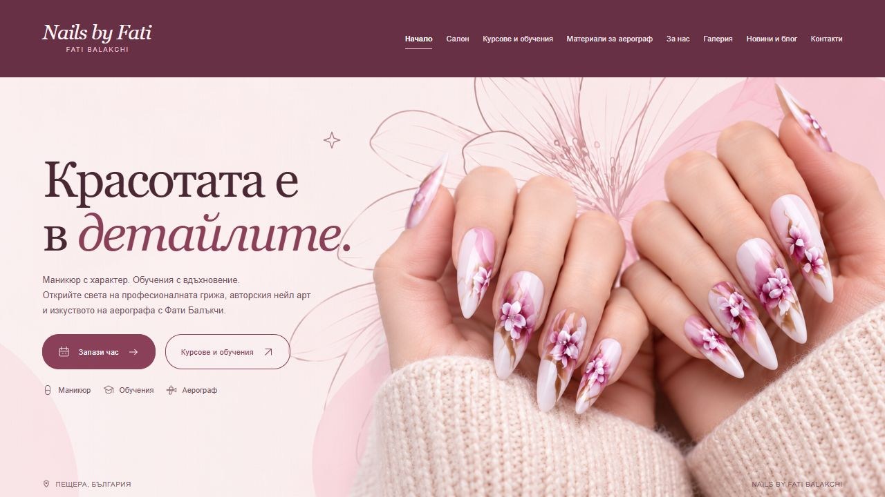
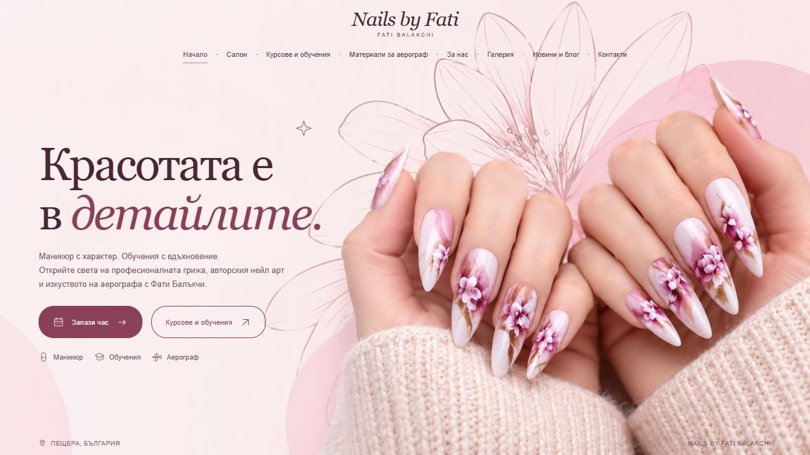

1. Clean & Simple
A quiet text menu with the logo on the left.
Your chosen Icon Studio page, with only the header changed.
Open any option to see the full landing page. All landing-page controls remain disabled.
A quiet text menu with the logo on the left.
The logo in the middle, with navigation on both sides.
A soft, rounded bar floating above the photograph.

A full-width burgundy bar with light text.

A centered logo with navigation underneath.
